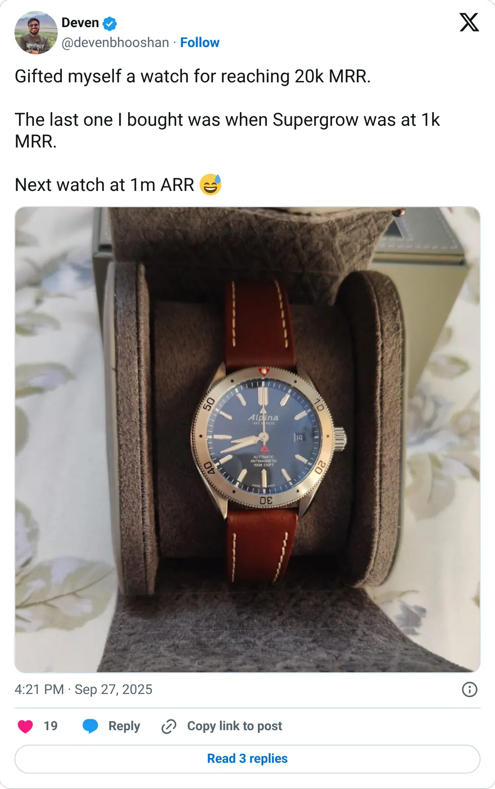
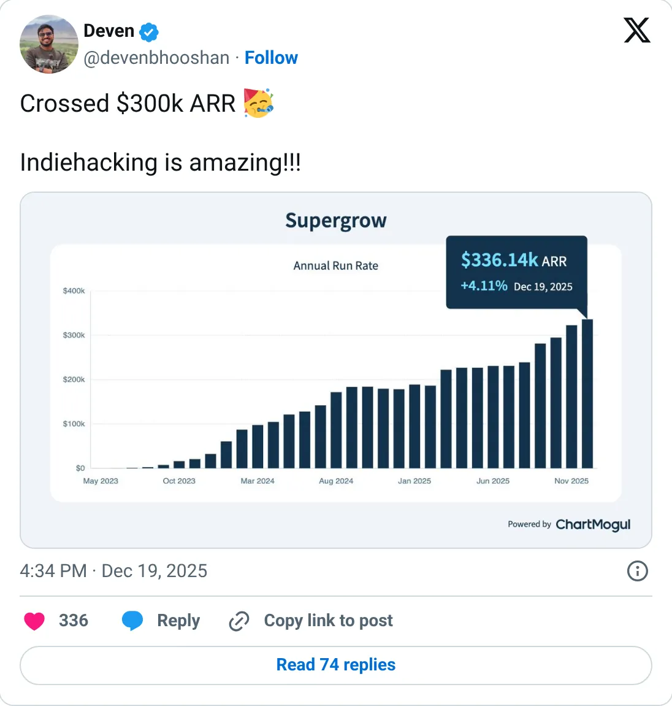

Don't build this
Supergrow
AI posts for LinkedIn, with three different sizes in the same story.
$300K+ ARR (Dec 2025) · $32,216 last 30 days (verified)
Should you build this
Supergrow writes and schedules LinkedIn posts. Late 2025 posts say roughly $20–25k MRR and '$300k+ ARR'. TrustMRR, last synced February 2026, shows about $32k of cash in 30 days and also lists about $79k of MRR. Three sizes, one product, a stale key. 'Personal brand on autopilot' is a crowded demo. It is not a spec you should raise against.
Cited from the captured posts, shown below: the earliest captured post (Sep 27, 2025) is the source for “$20K MRR (bought a watch at $1K)”; the latest milestone (Dec 19, 2025) is the source for “Crossed $300K ARR”.
Posts this is based on

$20K MRR (bought a watch at $1K)
Open on X

Crossed $300K ARR
Open on X
What the product is
AI LinkedIn personal-branding tool: idea generation, post writing, carousels and scheduling. Bootstrapped from India.
⚠ The verified figure is stale (Feb 2026). TrustMRR's MRR ($79K) and 30-day revenue ($32K) don't match.